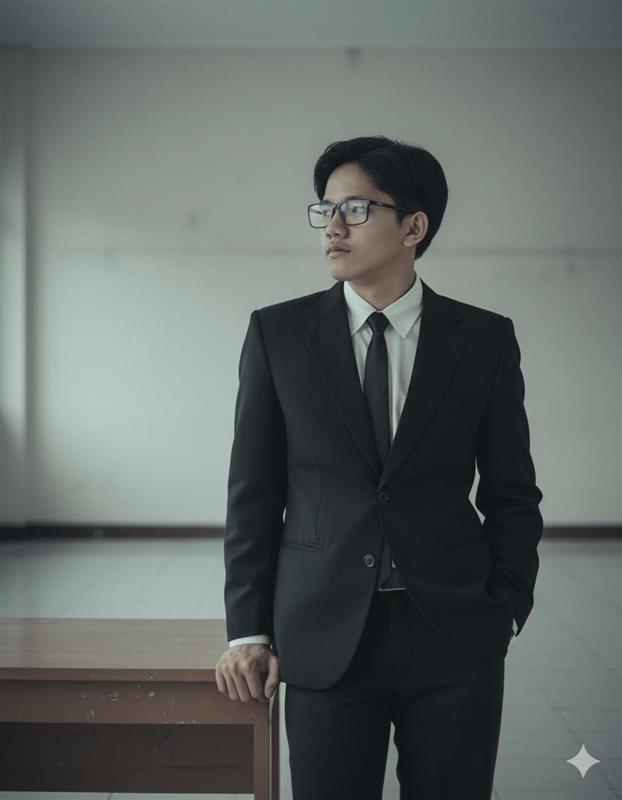

Halo, saya Muhammad Nabil
Saya adalah mahasiswa Teknik Informatika yang antusias dalam mengembangkan keterampilan di bidang teknologi dan pemrograman.
Lihat Portofolio

About Me!
Mahasiswa yang berminat pada teknologi dan database engineer. Saya berasal dari MAN IC Bangka Tengah. Dan saya telah mempelajari berbagai skill, termasuk:
- HTML: Mahir
- CSS: Mahir
- JavaScript: Menengah